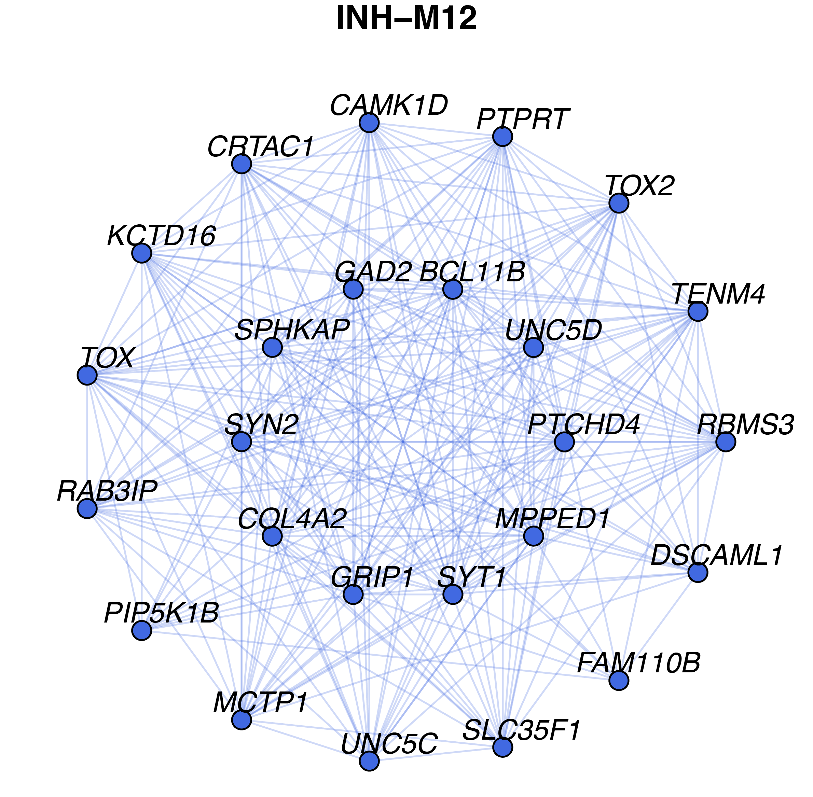
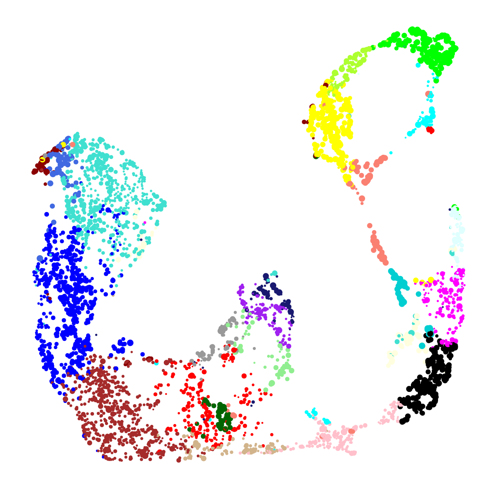
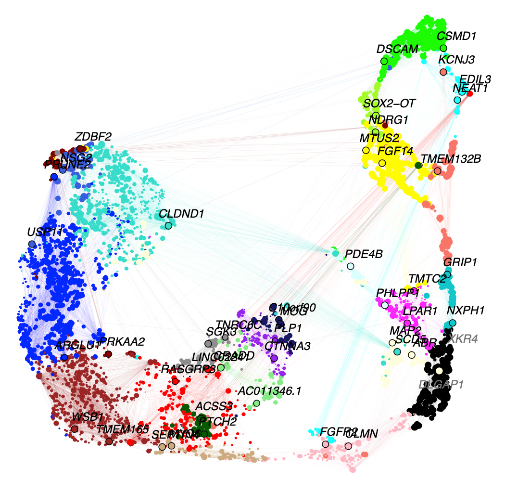
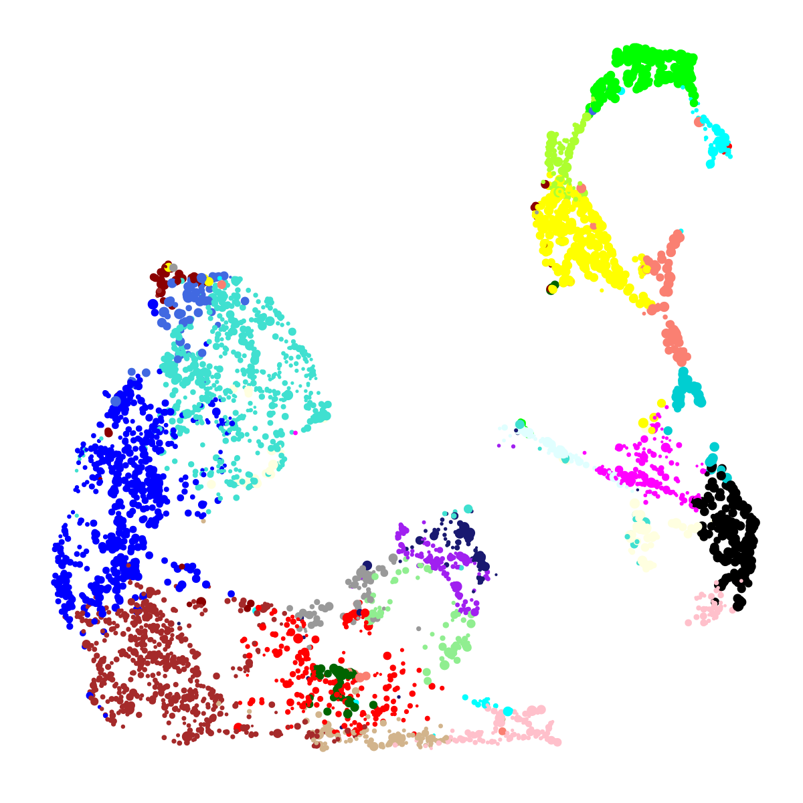

Network Visualization
network_visualizations.RmdIn this tutorial, we demonstrate several ways of visualizing the co-expression networks made with hdWGCNA. Before starting this tutorial, make sure that you have constructed the co-expression network as in the hdWGCNA basics. This tutorial covers the three main network visualizations within hdWGCNA:
-
ModuleNetworkPlot, visualizes a separate network plot for each module, showing the top 25 genes by kME. -
HubGeneNetworkPlot, visualizes the network comprisng all modules with a given number of hub genes per module. -
ModuleUMAPPlot, visualizes all of the genes in the co-expression simultaneously using the UMAP dimensionality reduction algorithm.
Before we visualize anything, we first need to load the data and the required libraries.
# single-cell analysis package
library(Seurat)
# plotting and data science packages
library(tidyverse)
library(cowplot)
library(patchwork)
# co-expression network analysis packages:
library(WGCNA)
library(hdWGCNA)
# network analysis & visualization package:
library(igraph)
# using the cowplot theme for ggplot
theme_set(theme_cowplot())
# set random seed for reproducibility
set.seed(12345)
# load the Zhou et al snRNA-seq dataset
seurat_obj <- readRDS('data/Zhou_control.rds')Individual module network plots
Here we demonstrate using the ModuleNetworkPlot function to visualize the network underlying the top 25 hub genes for each module. By default, this function creates a new folder called “ModuleNetworks”, and generates a .pdf figure for each module. There are a few parameters that you can adjust for this function:
ModuleNetworkPlot(seurat_obj)Here we can see what one of these network plots looks like:

In this network, each node represents a gene, and each edge represents the co-expression relationship between two genes in the network. Each of these module network plots are colored based on the color column in the hdWGCNA module assignment table GetModules(seurat_obj). The top 10 hub genes by kME are placed in the center of the plot, while the remaining 15 genes are placed in the outer circle.
Optionally, certain visualization parameters can be changed in this plot:
-
edge.alpha: determines the opacity of the network edges -
vertex.size: determines the size of the nodes -
vertex.label.cex: determines the font size of the gene label
Combined hub gene network plots
Here we will make a network plot combining all of the modules together using the HubGeneNetworkPlot function. This function takes the top n hub genes as specified by the user, and other randomly selected genes, and constructs a joint network using the force-directed graph drawing algorithm. For visual clarity, the number of edges in the network can be downsampled using the edge_prop parameter. In the following example, we visualize the top 3 hub genes and 6 other genes per module.
# hubgene network
HubGeneNetworkPlot(
seurat_obj,
n_hubs = 3, n_other=5,
edge_prop = 0.75,
mods = 'all'
)
As in the previous network plot, each node represents a gene and each edge represents a co-expression relationship. In this network, we color intramodular edges with the module’s color, and intermodular edges gray. The opacity of edges in this network is scaled by the strength of the co-expression relationship. Additional network layout settings can be passed to the layout_with_fr function in igraph. The user can also specify return_graph = TRUE to return the igraph object to plot using their own custom code.
g <- HubGeneNetworkPlot(seurat_obj, return_graph=TRUE)Applying UMAP to co-expression networks
Previously we visualized a subset of the co-expression network with an emphasis on the hub genes. Here, we use an alternative approach to visualize all genes in the co-expression network simultaneously. UMAP is a suitable method for visualizing high-dimensional data in two dimensions, and here we apply UMAP to embed the hdWGCNA network in a low-dimensional manifold.
hdWGCNA includes the function RunModuleUMAP to run the UMAP algorithm on the hdWGCNA topological overlap matrix (TOM). For the UMAP analysis, we subset the columns in the TOM to only contain the top n hub genes by kME for each module, as specified by the user. Therefore, the organization of each gene in UMAP space is dependent on that gene’s connectivity with the network’s hub genes. This function leverages the UMAP implementation from the uwot R package, so additional UMAP parameters for the uwot::umap function such as min_dist or spread can be included in RunModuleUMAP.
The following code demonstrates using the RunModuleUMAP function with 10 hub genes per module:
seurat_obj <- RunModuleUMAP(
seurat_obj,
n_hubs = 10, # number of hub genes to include for the UMAP embedding
n_neighbors=15, # neighbors parameter for UMAP
min_dist=0.1 # min distance between points in UMAP space
)Next we will make a simple visualization of the UMAP using ggplot2:
# get the hub gene UMAP table from the seurat object
umap_df <- GetModuleUMAP(seurat_obj)
# plot with ggplot
ggplot(umap_df, aes(x=UMAP1, y=UMAP2)) +
geom_point(
color=umap_df$color, # color each point by WGCNA module
size=umap_df$kME*2 # size of each point based on intramodular connectivity
) +
umap_theme()
In this plot, each point represents a single gene. The size of each dot is scaled by the gene’s kME for it’s assigned module. ggplot2 is sufficient to visualize the genes in the module UMAP, but here we are not visualizing the underlying network. We can use the function ModuleUMAPPlot to plot the genes and their co-expression relationships.
ModuleUMAPPlot(
seurat_obj,
edge.alpha=0.25,
sample_edges=TRUE,
edge_prop=0.1, # proportion of edges to sample (20% here)
label_hubs=2 ,# how many hub genes to plot per module?
keep_grey_edges=FALSE
)
This plot is similar to the one that we made with ggplot2, but we are showing the co-expression network, and labeling 2 hub genes in each module. For visual clarity, the we downsample to keep only 20% of the edges in this network using the edge_prop parameter. We also allow the user to also return the igraph object to make their own custom plots or to perform downstream network analysis:
g <- ModuleUMAPPlot(seurat_obj, return_graph=TRUE)Varying the number of hub genes
The number of hub genes that we include in the UMAP calculation influences the downstream visualization. Here we use gganimate to visually compare the UMAPs that are computed with different numbers of hub genes.
Code
# different label weights to test
n_hubs <- c(1, 1:10*5)
# loop through different weights
df <- data.frame()
for(cur_hubs in n_hubs){
# make a module UMAP using different label weights
seurat_obj <- RunModuleUMAP(
seurat_obj,
n_hubs = cur_hubs,
n_neighbors=15,
exclude_grey = TRUE,
min_dist=0.1
)
# add to ongoing dataframe
cur_df <- GetModuleUMAP(seurat_obj)
cur_df$n_hubs <- cur_hubs
df <- rbind(df, cur_df)
}
# ggplot animation library
library(gganimate)
# plot with ggplot + gganimate
p <- ggplot(df, aes(x=UMAP1, y=UMAP2)) +
geom_point(color=df$color, size=df$kME*2 ) +
ggtitle("N hubs: {closest_state}") +
transition_states(
n_hubs,
transition_length = 2,
state_length = 2,
wrap = TRUE
) +
view_follow() +
enter_fade() +
umap_theme()
animate(p, fps=30, duration=25)
This animation shows each of the UMAPs generated using different numbers of hub genes.
Supervised UMAP
UMAP is often used as an unsupervised approach to project data points into a dimensionally-reduced spaced, but we can also supply UMAP with known labels to perform a supervised analysis. In principal, UMAP can better distinguish between different groups of data points in the embedding if the algorithm is aware of these groupings. Therefore, we allow the user to run a supervised UMAP using the RunModuleUMAP function, where each gene’s module assignment is supplied as the label.
To perform a supervised UMAP analysis, we set supervised=TRUE, and we can optionally use the target_weight parameter to determine how much influnce the labels will have on the final embedding. A target_weight closer to 0 weights based on the structure of the data while a target_weight closer to 1 weights based on the labels. The following code shows how to run and visualize the supervised UMAP:
# run supervised UMAP:
seurat_obj <- RunModuleUMAP(
seurat_obj,
n_hubs = 10,
n_neighbors=15,
min_dist=0.1,
supervised=TRUE,
target_weight=0.5
)
# get the hub gene UMAP table from the seurat object
umap_df <- GetModuleUMAP(seurat_obj)
# plot with ggplot
ggplot(umap_df, aes(x=UMAP1, y=UMAP2)) +
geom_point(
color=umap_df$color, # color each point by WGCNA module
size=umap_df$kME*2 # size of each point based on intramodular connectivity
) +
umap_theme()
To demonstrate what the supervised UMAP looks like using different weights for the labels, we can make a different UMAP for several values of target_weight and compare the outputs using gganimate.
Code
# different label weights to test
weights <- 0:10/10
# loop through different weights
df <- data.frame()
for(cur_weight in weights){
# make a module UMAP using different label weights
seurat_obj <- RunModuleUMAP(
seurat_obj,
n_hubs = 10,
n_neighbors=15,
exclude_grey = TRUE,
min_dist=0.3,
supervised=TRUE,
target_weight = cur_weight
)
# add to ongoing dataframe
cur_df <- GetModuleUMAP(seurat_obj)
cur_df$weight <- cur_weight
df <- rbind(df, cur_df)
}
# ggplot animation library
library(gganimate)
# plot with ggplot + gganimate
p <- ggplot(df, aes(x=UMAP1, y=UMAP2)) +
geom_point(color=df$color, size=df$kME*2 ) +
ggtitle("Supervised weight: {closest_state}") +
transition_states(
weight,
transition_length = 2,
state_length = 2,
wrap = TRUE
) +
view_follow() +
enter_fade() +
umap_theme()
animate(p, fps=30, duration=25)